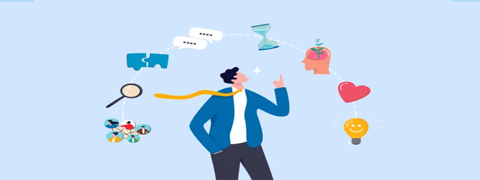

Consejos para aprender algo nuevo
Pasar un día en la naturaleza es una de las mejores formas de reconectar contigo mismo. Desde el sonido del viento entre los árboles hasta el olor del suelo húmedo después de la lluvia, cada experiencia tiene el poder de relajarte y recargar tu energía.
¿Sabías que caminar por la naturaleza mejora el ánimo y reduce el estrés? Tómate un momento para disfrutar de la belleza del mundo natural.
1. Establece metas claras y alcanzables
Antes de comenzar, es fundamental que establezcas metas claras. Esto te permitirá tener una visión de lo que deseas lograr y te mantendrá enfocado. Divide el proceso de aprendizaje en pasos más pequeños y alcanzables, para evitar sentirte abrumado. Por ejemplo, si estás aprendiendo a tocar la guitarra, una meta inicial podría ser aprender los acordes básicos antes de pasar a canciones más complejas.
2. Busca apoyo y comparte tus avances
Aprender algo nuevo puede ser solitario, pero no tiene por qué serlo. Busca comunidades, amigos o grupos que compartan tus intereses. Ellos pueden ofrecerte apoyo, motivación y nuevas perspectivas. Además, compartir tus avances con otros te permite celebrar tus logros, por pequeños que sean, y te ayuda a mantenerte motivado.
Por ejemplo, si estás aprendiendo a cocinar, unirte a un grupo de cocina en línea o tener a un amigo con quien probar nuevas recetas puede hacer la experiencia mucho más divertida y enriquecedora.
Volver al blog